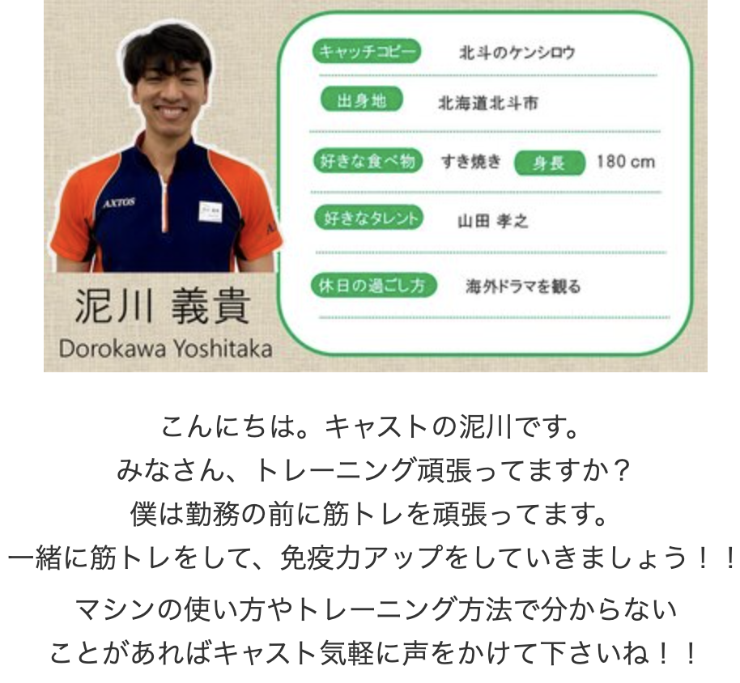
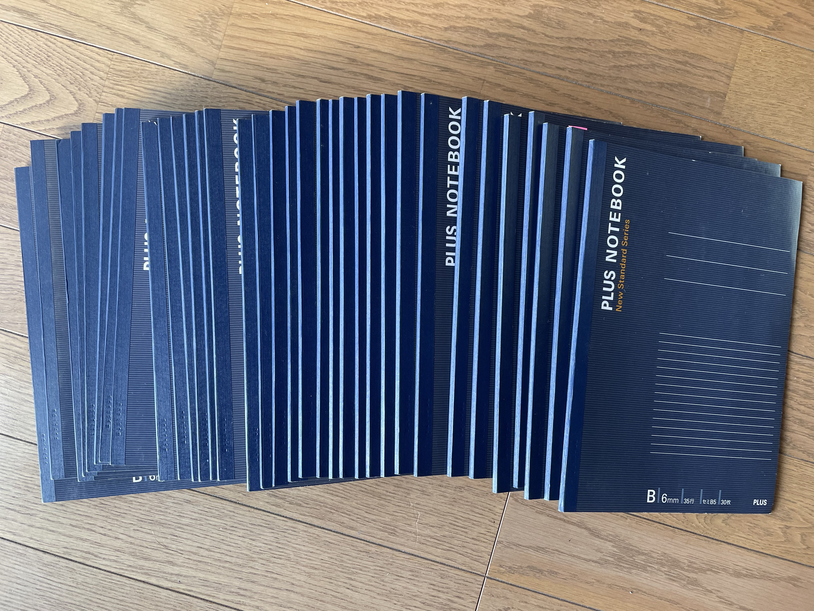
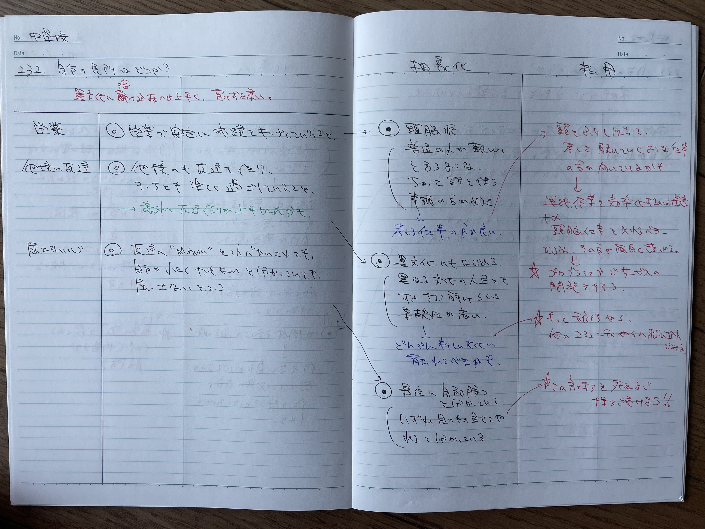
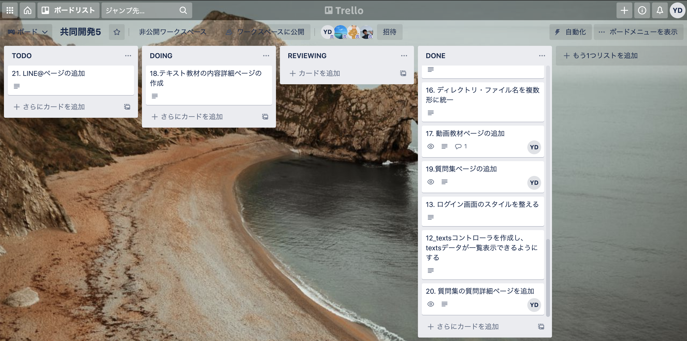

泥川義貴 Portfolio Site
about me
パーソナル情報
泥川 義貴（どろかわ よしたか）
1989年02月22日生まれ / 32歳
経歴
- ・主な経歴は左図の通りです。
-
・北海道(函館市)→新潟県(長岡市)→京都府(舞鶴市)→新潟県(新潟市)→愛知県(安城市)と
生活環境が変化する中で様々な仕事を経験し、
その都度その仕事環境に適応して成果を上げてきました。 - ・愛知県にきてからは、下記の２点をテーマに取り組んできました。
①長期的に継続することで価値が生まれる事に取り組む
②毎年1つ新たな挑戦をする
- ・現在転職活動中
学習したプログラミングスキル
- HTML,CSS → サイト模写
- JavaScript → マインスイーパを作製
- Ruby → 改札機のプログラムを作製
- Rails → ブログアプリ・書籍管理アプリを作製
- 共同開発 → オンラインサロンの教材ページを作製
※成果物については下記に参照してますので各リンクをご確認ください
どのような業務をしたいか
現状よりも効果的かつ効率的になるソフトウェアの開発に携わりたいです。
業務に必要な人員・時間・工程数などの削減に貢献することで価値を高める仕事がしたいです。
どのようなエンジニアになりたいか
エンジニアを志した理由は、
『社会の大きな変化に自分の能力を掛け合わせて価値を生み出し、多くの人に貢献したい』
からです。
そのために必要な能力は下記３点だと考えており、このようなエンジニアになりたいと思っています。
1.ゼロベース思考ができる
『そもそも』をキーワードに、当たり前を疑い、根本的な構造から見直すことができる。
この視点を常に持ちながら、俯瞰的に仕事ができるようになりたいと考えております。
2.恐れずに改善を繰り返す
より良い改善案が浮かんだら、現状の仕事の状況などに関わらず、恐れずにその案を提案できる。
そして、それを繰り返し実行できるようになりたいと考えております。
3.言語化力が高い
プログラミングだけでなく、仕事上の意思疎通を円滑にする言葉遣いができる。
そのようなコミュニケーション能力の高いエンジニアになりたいと考えております。
海上保安庁

航海士補としての様々な業務
行ったこと
- ・海上保安学校での1年間の研修にて、首席の成績で卒業をした。
- ・巡視船えちご、巡視船ひだ、巡視艇ゆきつばきの３隻で勤務をした。
- ・柏崎刈羽原子力発電所の海上警備や尖閣諸島領海警備などの警備業務に従事した。
- ・密漁事案や不法入国者の取締りなど、海上での違反の取締り業務に従事した。
得たこと・学んだこと
- ・海上保安学校は12人部屋での共同生活、
現場に出てからも長期に渡る船内での共同生活を経験し、
集団生活の中での協調性を身に付けました。 - ・どんなに海上が荒れていても仕事をしなければならない状況下の仕事を経験し、
精神力を鍛えられました。
現在は、あらゆる事柄が「船上での仕事に比べたら苦じゃない」と感じるようになりました。 - ・トイレや風呂の掃除などの雑業務も、1つの船を全員で動かす上で必要な仕事であり、
どんな仕事にも等しく価値があるということを学びました。
旅行
＜カンボジアの遺跡＞
現状を相対的にみる旅行
行ったこと
- ・海外では、ドバイ・セブ島・カンボジア・マレーシア・台湾、
国内では、奄美大島・屋久島などに旅行した。
得たこと・学んだこと
- ・現在の自分の置かれている状況はとても幸せだということが理解できた。
- ・物事は、相対的に観ることで正しく評価できることを学んだ。
アクトス
＜アクトスのホームページ＞
実践者のインストラクター
行ったこと
- ・5年間で遅刻・欠勤・早退・病欠など1度もなく、シフトを一切乱すことなく勤務した。
- ・スポーツインストラクターとして、ジムやプールでの巡回やトレーニング指導などを行った。
- ・トレーニングに詳しい人がいなかったため、休憩や勤務外の時間を使って筋トレを実施した。
- ・2021年9月末退職予定。
得たこと・学んだこと
- ・泥ちゃん＝筋トレの人という認識と筋トレのことなら泥川に聞けという評価を得た。
- ・スポーツクラブにトレーニングに詳しい人が一人もいないという事実があることを学んだ。
- ・特に年配のお客様とのコミュニケーションをする能力を高められた。
筋トレ
＜スプレッドシートの数値管理動画＞
PDCAサイクルの練習
行ったこと
- ・週2〜6回のトレーニングを4年半継続している。
- ・スプレッドシートにて、日々のトレーニングを数値管理している。
得たこと・学んだこと
- ・習慣化のコツを掴み、継続力を得た。
- ・肉体的にも精神的にも活力が高まった。
- ・定量的に評価することの重要性を学んだ。
- ・常にPDCAサイクルを回すことで成果を出しやすくすることを学んだ。
メモの魔力
＜自己分析1000問ノート37冊＞
＜実際のノートの中身＞
徹底的な自己分析
行ったこと
- ・自己分析1000問を167日かけて完遂した。
- ・その日の最重要な問いをnoteに書いて、167日間休むことなく毎日投稿した。
得たこと・学んだこと
- ・自分にとっての大切な価値観や強み・弱みを理解することができた。
- ・内省する時間をとることの重要性を学んだ。
- ・結果を残す人ほど、地道なことをコツコツ積み上げていることを理解できた。
- ・思考を深めるときは、紙に書くという行為が非常に有効であることを学んだ。
- ・アウトプット(noteに投稿する)前提で行動をすると脳への定着率が高まることを学んだ。
- ・継続力を高めることができた。
スパルタキャンプ
＜合宿風景＞
4日間のプログラミング合宿
行ったこと
- ・Linux, Git, Ruby, Railsなどの基礎を学習した。
- ・4日間プログラミング漬けの生活をした。
- ・共同開発を行った。
得たこと・学んだこと
- ・高校時代に勉強したプログラミングとは全く違う印象を得た。
- ・好き嫌いが分かれ、プログラミングに向かない人も多数いることを学んだ。
- ・次回は、ティーチングアシスタントとして参加して欲しいとのオファーをいただいた。
- ・プログラミング教材開発のアルバイトの経験をさせていただいた。
プログラミング
HTML＆CSS
Mリーグのサイト模写
{kind=link}
{kind=link}
JavaScript
＜マインスイーパの実行画面動画＞
マインスイーパ
アプリの概要
- ・JavaScriptで動作するマインスイーパー
- ・3種の難易度に応じて、ランダムに爆弾を設置
- ・マス目を選択すると周囲に存在する爆弾の数を表示
- ・全ての爆弾に旗を立てればゲームクリア
- ・誤って爆弾を選択するとゲームオーバー
ソースコード
GitHub(minesweeper)こだわりポイント
- ・マインスイーパーの基本ルールは全て実装
- ・爆弾をランダムに配置
- ・右クリックで旗を立てる（トラックパッド用にフラグモードを用意）
- ・顔マークのクリックでリセット
- ・周囲に爆弾が無ければ、爆弾が存在するマス目まで一気に開く
- ・1つ目のマスを開くと同時にタイマー起動
- ・ゲーム終了と同時にタイマーストップ
Ruby
＜改札機プログラムの実行画面動画＞
改札機
アプリの概要
- ・Rubyで動作する電車料金表示アプリ
- ・電車に乗る駅と降りる駅を指定すると料金を表示する
ソースコード
GitHub(ticket_machine)こだわりポイント
- ・乗る駅と降りる駅に同じ駅を選択した場合は、エラーとなる
- ・選択肢にない駅を選ぶとエラーとなる
- ・上りにも下りにも対応済み
Ruby on Rails
＜ブログアプリの実行画面動画＞
ブログアプリ
アプリの概要
- ・ブログ記事を投稿できるアプリ
ソースコード
GitHub(my_blog)こだわりポイント
- ・mini_magickを使用し、文章だけでなく、画像の投稿も可能にした
- ・バリデーションにより、入力に制限を加えた
- ・deviseを使用し、ログイン機能を実装
- ・ransackを使用し、検索機能を実装
- ・kaminariを使用し、改ページ機能を実装
使用したGem
- ・ransack：検索機能
- ・devise：ログイン機能
- ・kaminari：改ページ機能
- ・mini_magick：画像登録機能
＜書籍管理アプリの実行画面動画＞
書籍管理アプリ
アプリの概要
- ・書籍を登録し、管理するアプリ
- ・本の画像と共にコメントを記載する事が可能
- ・書籍をカテゴリー別に管理可能
ソースコード
GitHub(book_shelf)こだわりポイント
- ・CRUD処理を実装して制作したアプリ
- ・国際化対応済み
- ・deviseにより、ログイン機能を実装
- ・kaminariを用いて、ページネーションを実装
- ・N+1問題にも対処済み
使用したGem
- ・bootstrap：レスポンシブデザイン
- ・devise：ログイン機能
- ・kaminari：改ページ機能
- ・ransack：検索機能
- ・mini_magick：画像登録機能
共同開発
＜共同開発で制作のアプリ動画＞
＜共同開発でのTrelloイメージ＞
教材ページ制作
アプリの概要
- ・オンラインサロンの教材ページを制作
- ・サロン生4名とTA1名の計5名のチームで共同開発実施
こだわりポイント
- ・サロンオーナー(Rubyエンジニア)がTAとなり、
サロンメンバーと合同でアプリ開発 - ・Trelloでタスク管理し、挑戦したいタスクに参加して、
完了したらステータスを完了にする - ・GitHubを使用して、共同開発実施
- ・Cloneし、Branchを切る、
リモートリポジトリへpushし、プルリクを送付、
レビューの後にマージする
の一連の流れを実施